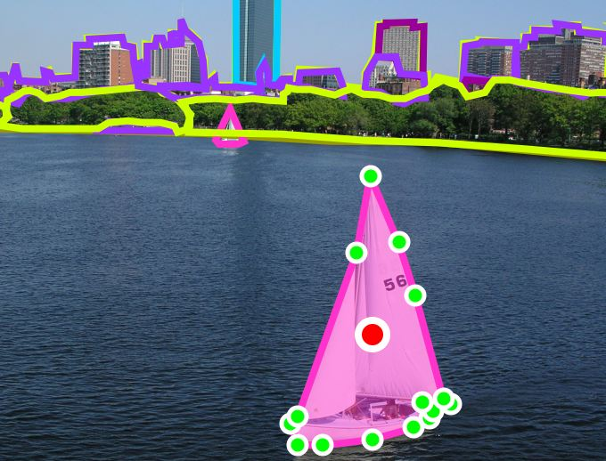
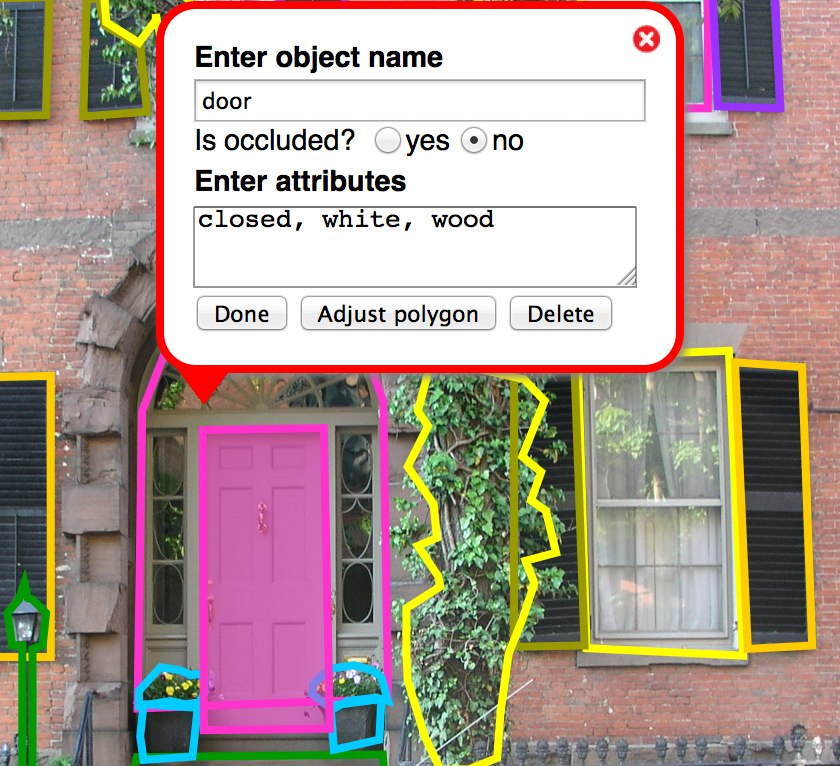

Labeling instructions When you enter the tool, an image from our database will be randomly selected and shown. You can help by annotating the aspect of the image that you think indicates when the photo was taken. Once you have completed the image, you can view a new image by pressing the "show next image" button. The following steps describe how to label an object:
1. Start by pressing the left
mouse button at some point along the boundary of the object.
|
 boat |
|||||||||||||
Examples Good object labels:
Bad object labels:
| ||||||||||||||
Entering object information Use common English words. Try to avoid application specific terms. For instance, avoid doing things such as replacing right arm by ra. This might be useful in the short term but will make difficult reusing the data for other applications in the future. Also, it is always good practice to have data that is itself explanatory. Object naming: Use common English names for objects. Use a name that you think other people are likely to use to describe the same object. You can use several words to describe an object. Example object names: hair, smile, posture, etc. Decade: Check the corresponding box to indicate in which decade you think the photo was taken. A photo taken in 1987 would be "1980s" while a photo taken in 1990 would be "1990s". Quality: Check the corresponding box to report if the quality of the photograph indicated when it was taken. For example, the resolution of the photograph might have helped you decide which year it was taken. |
 | |||||||||||||
Labeling guidelines The following are some recomendations for how to provide annotations that are as useful as possible. View the entire image: Make sure that your browser occupies the entire screen and that you scroll to see the entire image. If you label an object on the edge of your browser, make sure to scroll so that the entire object is visible. Follow the object outline: Click on top of the object boundary so that the polygon accurately delineates the object outline. The ideal outline should be good enough for somebody to recognize the object just by seeing the drawn polygon. Labeling occluded objects: Sometimes objects will be only partially visible. This is especially true for regions like hair, shoulders, etc which become difficult to label when there are many occlusions. We recommend in these cases to complete the boundary as if they were not occluded. |
||||||||||||||
Advanced features Delete entire polygon: Select the polygon. You will have the option to delete the polygon. | ||||||||||||||